Introducción
Video tutoriales para la construcción de una Impresora 3D de tipo Prusa Mendel iteración 2. Además de construir la Prusa, se introducen ideas y conceptos, y sobre todo el porqué de muchas cosas. En ellos se ha sintetizado gran parte del conocimiento generado en la lista del proyecto clone wars.
Te recomiendo que vayas viendo los vídeos uno a uno, según están ordenados en esta wiki. La colección completa está accesible en esta lista de reproducción.
Electrónica
Descripción de la electrónica: RAMPS 1.2
|
|
|
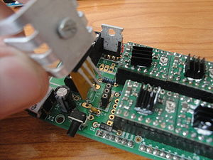 Detalle del zócalo para colocar fácilmente el mosfet de la base caliente ( Click para ampliar) |
|
- Descripción: Se muestra la Ramps 1.2 y se habla genéricamente sobre los tipos de electrónica para las impresoras 3D. Las dos grandes familias de placas son:
- Ramps. Actualmente existen las versiones ramps 1.2 (mostrada en este tutorial), Ramps 1.3 y Ramps 1.4. Los detalles cambian, pero la idea es la misma para todas ellas. Todo lo que se comenta para la 1.2 es válido para las otras
- Sanguinololu
- Tareas a Realizar:
- Soldar la electrónica
- Poner un zócalo de 3 pines hembra para el mosfet de la base caliente. En las RAMPs es el componente Q3.
- Colocar un disipador al mosfet
- Soldar los pines de los pololu y colocarlos en la placa
Probando la electrónica: Descarga del firmware hola mundo
|
|
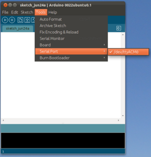 Fig 2: Seleccionando el puerto serie donde está conectado el Arduino Mega. Plataforma: Ubuntu Linux 11.10 ( Click para ampliar) |
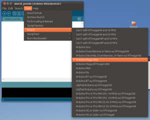 Fig 3: Seleccionando la placa Arduino Mega 2560 ( Click para ampliar) |
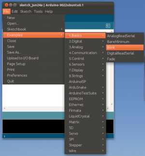 Fig 4: Abriendo el ejemplo "blink" para descargar en el Arduino Mega ( Click para ampliar) |
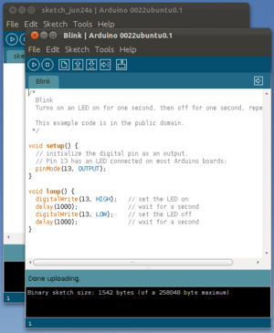 Fig 5: Ejemplo blink descargado en el arduino Mega ( Click para ampliar) |
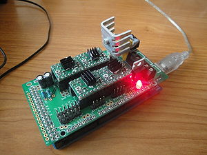 Fig 6: Descargando en la Ramps 1.2 + Arduino mega ( Click para ampliar) |
- Descripción: Tenemos que comprobar que somos capaces de descargar firmware en la electrónica de nuestra impresora. Con esto nos aseguramos de que la electrónica funciona, de que el software en el pc está correctamente instalado y que sabemos cómo descargar firmware.
- Tareas a realizar:
- Instalar el entorno de Arduino 22. Está disponible en la página de descarga de Arduino. Existen version más actuales pero comenzaremos con esta versión que es con la que tenemos probado todo el firmware. Luego, cuando la impresora funcione correctamente, será el momento de actualizarse a nuevas versiones.
- Conectar el arduino Mega al PC (Figura 1). Sólo el Arduino. La ramps de momento no. Queremos comprobar que el Arduino Mega funciona correctamente
- Seleccionar el Puerto serie en la opción tools/Serial Port (Figura 2). En Linux será el dispositivo /dev/ttyAC0. En Windows será COMx, donde x es un número. En MAC....
- Seleccionar el Arduino Mega 2560 en la opción tools/Board/Arduino Mega 2560 (Figura 3).
- Abrir el ejemplo Blink" que está en File/Examples/1.Basic/Blink (Figura 4).
- Descargar el ejemplo en el Arduino Mega (Figura 5). Pulsando en la opción de Upload. Al cabo de unos segundo el led del Arduino Mega deberá parpadear.
- Probar a descargar en el conjunto Arduino Mega + Ramps (Figura 6). Como la Ramps la hemos soldado nosotros, es importante hacer las pruebas por separado. Primero comprobar que el Arduino Mega funciona (pasos anteriores). Ahora se coloca la Ramps encima del Arduino Mega y se descarga el ejemplo Blink. Debería poner cargarse. Con esto nos aseguramos de que Nuestra electrónica está lista para descargar el Firmware de la impresora.
Descargando Firmware para la impresión 3D: Sprinter
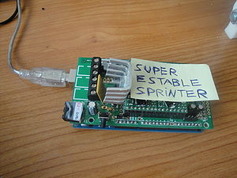 Fig 1: La ramps con el firmware Sprinter (super-estable) cargado. Lista para conectarse al PC ( Click para ampliar) |
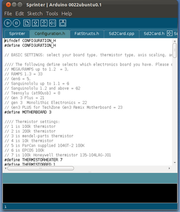 Fig 2: Configurando el Sprinter ( Click para ampliar) |
- Descripción: Se habla sobre los dos firmwares más importantes que existen hoy en día: Sprinter y Marlin. Seleccionaremos una versión estable de Sprinter (muy probada en la impresora R3), la configuraremos para la RAMPS 1.2 y la descargaremos.
- Tareas a realizar:
- Bajar el Sprinter Super-estable (Está en la página de R2-reloaded).
- Descomprimirlo y copiar la carpeta Sprinter en el directorio /home/usuario/Sketchbook en Linux. Para los sistemas operativas MAC y Windows ir a la opción File/preferences y mirar el directorio en la caja sketch book location.
- Arrancar el entorno de arduino y abrir el firmware desde la opción File/Sketchbook/Sprinter
- Configurar la electrónica en la pestaña configuration.h. En el ejemplo del tutorial es la RAMPS 1.2. Para ello modificar esta línea con el código correspondiente a la electŕonica: #define MOTHERBOARD 3 (Para la RAMPs 1.3 ó Ramps 1.4 usar el número 33. La ramps 1.4 no está en los comentarios, pero funciona igual que la 1.3)
- Descargar el firmware en la electrónica
- Ya tenemos la electrónica lista para conectarla al PC
Probando el software de impresión: Pronterface
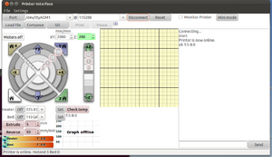 Fig 1: El pronterface en acción. Se acaba de establecer la conexión con la electrónica ( Click para ampliar) |
- Descripción: Se presenta el programa que utilizaremos para imprimir: el Pronterface y se comprueba que se conecta con la electrónica. Se explica brevemente la interfaz del pronterface. Ya se tiene todo listo para probar la electrónica desde el PC.
- Tareas a realizar:
- Descargar este archivo con el Printrun (Pronterface). Descomprimir la carpeta en un directorio de trabajo.
- Conectar la electrónica al PC
- Arrancar el pronterface (Ejecutar archivo pronterface.py)
- Seleccionar el puerto serie
- Seleccionar la velocidad: 115200
- Pulsar el botón de connect. En zona de la derecha aparecerá el mensaje:
Connecting...
ok T:5 B:0
Printer is now online.
- Comprobar el pronterface puede abrir un archivo STL. Seleccionar la opción File/Open
- Ir a la carpeta test y abrir el archivo cube-20-20-10.stl
Preparando la fuente de alimentación
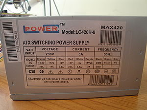 Fig 1: Especificaciones de mi fuente de alimentación. Alimentación de 12v y al menos 15A ( Click para ampliar) |
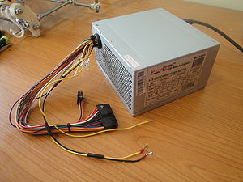 Fig 2: La fuente de alimentación lista para usarse con la Ramps 1.2 ( Click para ampliar) |
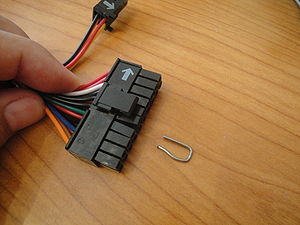 Fig 3: Trozo del clip usado para trucar la fuente ATX ( Click para ampliar) |
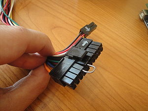 Fig 4: Insertando el trozo de clip para trucar la fuente ATX ( Click para ampliar) |
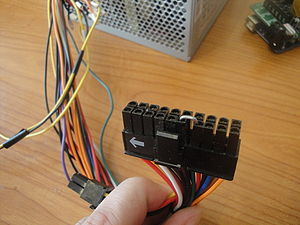 Fig 5: Conector molex de la fuente ATX trucado con el trozo de clip ( Click para ampliar) |
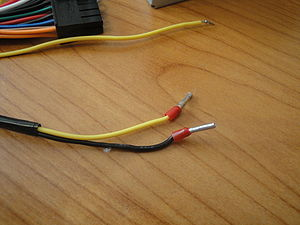 Fig 6: Cables de 12v (amarillo) y masa (negro) de la fuente ATX, con los terminales soldados para conectarlo a las 2 clemas de alimentación de la RAMPs 1.2 ( Click para ampliar) |
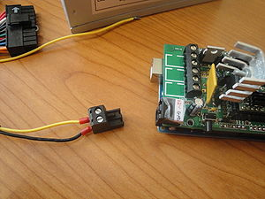 Fig 7: Conexion de la fuente ATX a la clema de la RAMPs 1.2 ( Click para ampliar) |
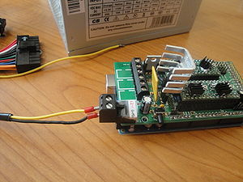 Fig 8: La RAMPS 1.2 conectada la fuente ATX. Lista para funcionar ( Click para ampliar) |
- Descripción: Se describe cómo preparar y probar la fuente de alimentación para la impresora 3D. Normalmente se utiliza una fuente ATX de PC. Son necesarios 12v y al menos una corriente de 15A
- Tareas a realizar:
- Para electronicas RAMPS: Cortar el conector molex de 4 vías que tiene 2 cables negros y 2 amarillos (12v). Soldar terminales en los extremos (opcional) y conectarlo a las clemas. En la Ramps 1.2 sólo se conectan 2 cables, mientras que en la ramps 1.3 se conectan los 4 (2 amarillos y 2 negros).
- Para la Sanguinololu se conecta directamente este conector molex a la electrónica
- Trucar la fuente ATX: Para que funcione es necesario conectar el cable verde del conector molex grande (20 pines) con el negro. Esto se hace fácilmente con un trozo de clip
- Enchufar la fuente a la red, encenderla y comprobar que el ventilar se mueve. ¡Ya tenemos la fuente lista!
Soldando los conectores de los motores paso a paso
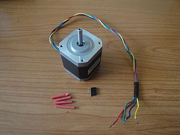 Fig 1: Material Necesario: Motor Paso a Paso Nema 17, tira de 4 pines hembra y 4 trozos de termorretrácil de 1.5cm ( Click para ampliar) |
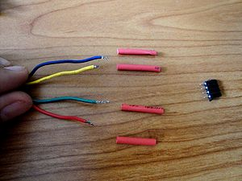 Fig 2: Colocación de los cables para soldar el conector ( Click para ampliar) |
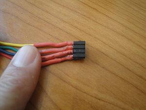 Fig 3: Conector soldado y terminado. ¡Listo para probar el motor! ( Click para ampliar) |
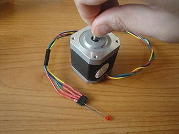 Fig 4: Comprobando las conexiones con la prueba del "led" ( Click para ampliar) |
- Descripción: Se describen los motores paso a paso y se suelda un conector en uno de ellos. Se comprueban las conexiones observando la corriente inducida en un led. Los motores los he comprado en xyz printers. Son NEMA 17.
- Tareas a realizar:
- Tener 1 motor paso a paso NEMA 17
- Preparar resto de material: una tira de 4 pines hembra, 4 trozos de termorretráctil de 1.5cm, soldador y estaño.
- Estañear los cables del motor
- Introducir el termorretráctil (no calentar todavía)
- Estañear los 4 pines hembra
- Unir los cables a los pines. Colores para los motores de XYZ printers: Amarillo, Azul, Verde y Rojo.
- Comprobar las conexiones conectando un led entre los cables verde y rojo. Girar el motor con la mano y comprobar que se enciende el led. Repetirlo con los cables amarillo y azul. La polaridad del led da igual (se puede conectar en cualquier sentido).
- ¡¡Nuestro motor estará listo para conectarlo a la electrónica y moverlo con el Pronterface!! (próximo tutorial)
Probando un motor
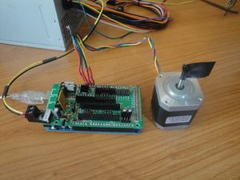 Fig 1: Probando el motor paso a paso conectado al eje X ( Click para ampliar) |
- Descripción: Se prueba un motor paso a paso, conectado al eje x. Se utiliza el Pronterface para moverlo y se explican los problemas más frecuentes
- Tareas a realizar:
- Quitar todos los drivers pololu de la RAMPS excepto el del eje x
- Quitar el mosfet de la base caliente (opcional)
- Conectar el motor al eje x
- Arrancar el pronterface, establecer la conexión y darle a que se mueva
- Ya tenemos la electrónica del eje x validada!!
Ajustando la corriente de los motores
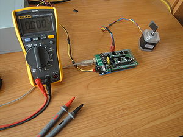 Fig 1: Material necesarios: Ramps, polímetro, motor paso a paso y fuente de alimentación ( Click para ampliar) |
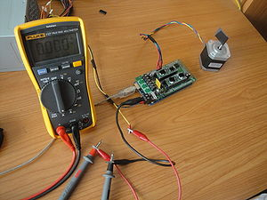 Fig 2: Conexionado para ajustar la corriente. El polímetro se pone en serie con el cable de 12v, configurado en modo amperímetro ( Click para ampliar) |
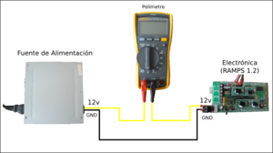 Fig 3: Esquema de conexionado del amperímetro para ajustar la corriente de los motores ( Click para ampliar) |
- Descripción: Se describe el procedimiento para ajustar la corriente de los motores paso a paso. Es muy importante hacerlo para que no consuman demasiado y así no se caliente ni se rompan los drivers. Si la corriente es muy pequeña el motor puede perder pasos.
- Tareas a realizar:
- Conectar el motor del eje X
- Conectar la ramps al PC
- Conectar la ramps a la fuente de alimentación
- Poner el polímetro en serie con el cable de 12 que viene de la fuente de alimentación, como se muestra en la figura 3.
- Encender la fuente de alimentación. Se verá el consumo cuando no hay motores funcionando, que es de unos 75mA.
- Arrancar el pronterface y darle a que se mueva el motor del eje x
- En el polímetro se verá la corriente total consumida (Corriente del motor + los 75mA)
- Mover el potenciómetro hasta que la corriente del motor sea de 200mA.
- Apagar la fuente. Sacar el pololu y conectar otro, para ajustar la corriente del eje Y, también a 200mA
- La corriente del eje z la ajustaremos a 400mA
- La corriente del extrusor la ajustaremos a 400mA
Tocando la marcha imperial con los motores
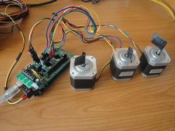 Fig 1: Los tres motores de los ejes x,y,z conectados a la ramps. Listos para tocar la marcha imperial!! ( Click para ampliar) |
- Descripción: Se van a mover 3 motores a la vez para comprobar que todo funciona bien. Para ello se enviará a la electrónica un fichero .gcode con la marcha imperial. Los motores empezarán a moverse y se podrá escuchar la famosa melodía de la guerra de las galaxias.
- Tareas a realizar:
- Colocar todos los drivers pololu con las corrientes ajustadas
- Conectar los motores de los ejes x,y,z
- Conectar la ramps al PC y alimentarla con la fuente
- Arrancar el pronterface y comprobar que los motores se mueven aisladamente
- Ir a File/Open y abrir el fichero imperial.gcode, que está en la carpeta Test.
- Pulsar el botón de Print
Preparando los finales de carrera
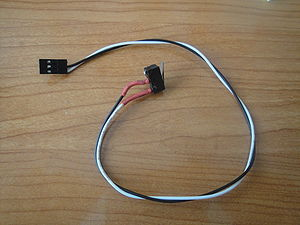 Fig 1: Uno de los finales de carrera ya montado ( Click para ampliar) |
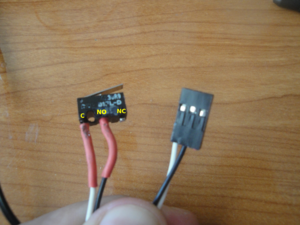 Fig 2: Conexiones en el final de carrera. Soldar los cables a las patas C y NO. ( Click para ampliar) |
- Descripción: Los finales de carrera nos permiten detectar el origen de coordenadas de nuestra impresora 3D. Los que nosotros utilizaremos son los mecánicos, que son muy baratos, funcionan muy bien y se colocan fácilmente. Lo primero es soldar los cables y el conector para enchufarlo a la electrónica.
- Tareas a realizar:
- Estañear los pines C y NO del final de carrera (Figura 2)
- Estañear los dos cables que se soldarán. Conviene que sean de colores distintos
- Colocar el termorretráctil
- Soldar los cables
- Aplicar calor en el termorretráctil
- Soldar los otros extremos de los cables a un conector de 3 pines. Si has comprado los finales de carrera en xyzprinters, este conector ya estará listo. Sólo hay que eliminar el cable rojo, ya que sólo se usarán 2 (el blanco y el negro).
- Usar un polímetro para comprobar que las soldaduras están bien hechas
Comprobando los finales de carrera
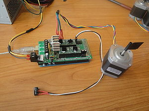 Fig 1: Probando el final de carrera del eje x ( Click para ampliar) |
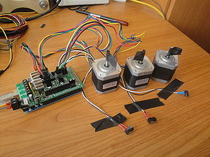 Fig 2: Probando los finales de carrera de los ejes x,y,z ( Click para ampliar) |
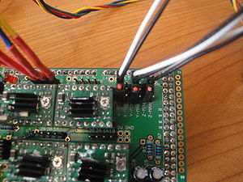 Fig 3: Conexión de los finales de carrera a la Ramps. Se conectan a los conectores que pone x-min, y-min, z-min ( Click para ampliar) |
|
- Descripción: Se prueban los 3 finales de carrera y comprueba el correcto funcionamiento del "homing"
- Tareas a realizar:
- Conectar el motor del eje x
- Conectar el final de carrera del eje x (en el conector x-min, y con el cable blanco en el pin 1. Figura 3)
- Hacer "homing" del eje x. Comprobar que funciona
- Conectar los motores y,z con sus correspondientes finales de carrera en y-min, z-min
- Hacer "homing" del eje y. Hacer "homing" del eje z
- Hacer un "homing" global.
- Ya tenemos lista la electrónica para construir nuestra impresora :-)
Preparativos
Preparación de las poleas
- Descripción: Montar las 3 poleas con los rodamientos. Dos son necesarias para el eje y, una para el eje X
- Material:
Aplanando los ejes de los motores
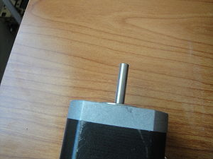 Eje original del motor. Es de sección circular ( click para ampliar) |
|
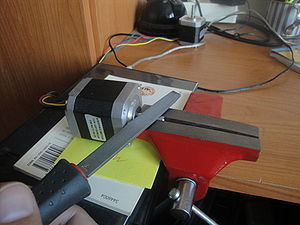 Aplanando el eje del motor. Necesario un tornillo de banco y una lima para metal ( click para ampliar) |
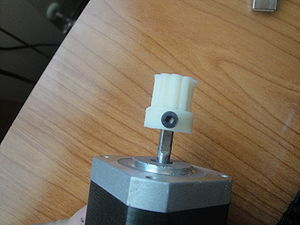 Insertando una polea en un motor con el eje aplanado. El tornillo debe estar en la parte aplanada ( click para ampliar) |
- Descripción: Para que las poleas se sujeten bien a los ejes de los motores conviene dejar un lado plano del eje. Estos ejes son de sección circular, pero mediante una lima y un tornillo de banco es fácil aplanarlos ligeramente. De este modo los tornillos tendrán una superficie plana para aprisionar el eje y no deslizarán.
- Tareas a realizar:
- Colocar una arandela de métrica 8 en el eje del motor a aplanar, así no se dañará el motor durante el limado
- Poner el eje del motor en el tornillo de banco y apretarlo para que no se escape. Debe asomar por la parte superior.
- Limar la parte saliente hasta que quede aplanada
- Estoy hay que hacerlos para 3 motores: El motor del extrusor, eje x, eje y.
- ¡¡SOLO HAY QUE HACERLO EN 3 MOTORES!! Los 2 motores del eje Z NO se aplanarán.
Poleas y Correas
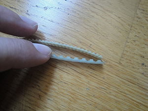 Comparación entre las correas T5 y T2.5 ( click para ampliar) |
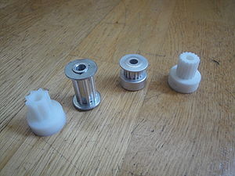 4 Poleas. De izquierda a derecha: Polea T5 impresa en ABS, polea T5 metálica, polea T2.5 metálica y polea T2.5 SLS ( click para ampliar) |
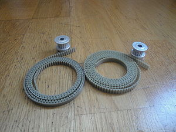 2 poleas T2.5 metálicas y dos correas T2.5. Es lo que usaremos en la construcción de nuestra Prusa 2 ( click para ampliar) |
|
- Descripción: Explicación de los tipos de poleas y correas que se están usando en la comunidad reprap. Tenemos las T5, T2.5 y las GT2. La primeras eran las que se usaban en la Prusa 1 (y también en la printrbot origingal). Las T2.5 son las que usaremos en nuestra Prusa 2. Las GT2 son las más adecuadas y se están empezando a introducir poco a poco en la comunidad. Se pueden conseguir velocidades de impresión mucho más altas.
- Tareas a realizar:
- Conseguir 2 correas T2.5 de 900mm de longitud y 5mm de anchura.
- Conseguir 2 poleas T2.5 metálicas o SLS
Dando un vistazo general a las piezas impresas de la Prusa 2
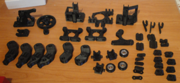 Todas las piezas para montar la Prusa iteración 2, con el extrusor Jonaskuehling ( click para ampliar) |
- Descripción: El juego de piezas de la Prusa 2 tiene 45 piezas y pesa 420gr. Se da una visión general y se comentan algunas de las piezas. Las piezas de la Prusa están disponibles en esta página.
- Tareas a realizar:
- Conseguir un juego completo de piezas de la Prusa 2
Empotrando tuercas
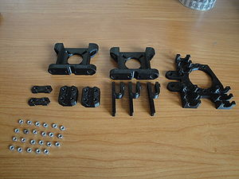 Las piezas que hay que modificar. 10 piezas. Se necesitan 23 tuercas M3 ( click para ampliar) |
|
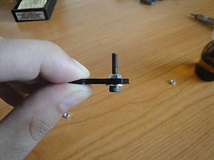 Técnica 1 para empotrar tuercas: Usar un tornillo M3, con una arandena. Atornillar la tuerca, echar unas gotitas de acetona y empezar a atornillar. La tuerca entrará ( click para ampliar) |
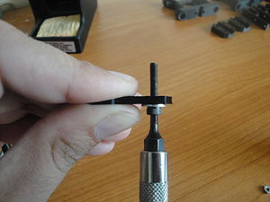 La tuerca ya ha entrando en su hueco ( click para ampliar) |
Técnica 2 para empotrar tuercas: Aplicar calor con un soldador. La tuerca entrará como "mantequilla" ( click para ampliar) |
|
- Descripción: Las piezas recién impresas hay que modificarlas para construir la Prusa. Debido a las tolerancias de cada impresora hay que asegurarse que los tornillos de métrica 3 entran en sus taladros. Si no es así usaremos una lima para agrandarlos. También hay que incrustar las tuercas en sus huecos respectivos. Esto se puede hacer de dos maneras, mostradas en el video. Por un lado usando un tornillo, una arandela y con un poquito de acetona se introduce la tuerca ("forzando"). Otra técnica mejor es usar un soldador para calentar la tuerca y que entre como "mantequilla". Hay que empotrar 23 tuercas, en 10 piezas.
- Tareas a realizar:
- Comprobar con un tornillo de métrica 3 que entra bien en los taladros de todas las piezas
- Usar una lima para agrandarlos si no fuera así
- Empotrar un total de 23 tuercas en las siguientes piezas:
- 4 tuercas en las 2 Belt-clamps
- 8 tuercas en las 2 z-couplings
- 4 tuercas en el x-carriage
- 3 tuercas en los 3 endstop
- 4 tuercas en los 2 z-motors-holders
Montaje del eje x
Piezas necesarias y montaje del carro
Todas las piezas necesarias para montar el eje x ( click para ampliar) |
Carro del eje x montado ( click para ampliar) |
- Material necesario:
- Piezas impresas:
- 2 Belt clamps (con sus tuercas empotradas)
- El x-end-motor
- El x-idler
- El x-carriage (con las tuercas empotradas)
- 1 Bearing-guide (ya preparado, con el rodamiento 608 puesto)
- 7 Rodamientos lineales (LM8UU)
- 1 Motor paso a paso con el eje aplanado
- 1 Polea T2.5 para el motor
- 2 varillas lisas de 8mm de diámetro y longitud de 390mm ó 406mm
- 7 Bridas pequeñas, de 2.5mm de anchura y 100mm de largo
- Varilla roscada M8 entre 35 y 40mm de largo
- 2 tuercas M8
- 3 arandelas M8
- 7 arandelas M3
- 3 tornillos M3 de 12mm de largo
- 4 tornillos M3 de 16mm de largo
- 1 Correa T2.5 de 900mm de largo
- Descripción: Se describen las piezas necesarias. Se preparan las piezas de los dos extremos y se monta el carro del eje x, con sus belt-clamps y sus rodamientos lineales
- Tareas a realizar:
- Quitar el plástico del taladro de 8mm de las piezas de los extremos (x-end-motor, x-idler)
- Atornillar las belt-clamps al carro
- Colocar los 3 rodamientos lineales en el carro
Montando las barras lisas
El carro montado sobre las varillas lisas y las piezas laterales colocadas ( click para ampliar) |
- Descripción: Continuación del montaje del eje x. Ahora hay que insertar las varillas lisas en los extremos y colocar el carro
- Tareas a realizar:
- Repasar los taladros de 8mm de los extremos (si fuera necesario)
- Meter las varillas lisas en el extremo izquierdo. ¡Mucho cuidado!
- Colocar el carro en las varillas
- Insertar el extremo derecho. ¡Mucho cuidado!
Montando el resto de elementos
Polea de la parte derecha, que hace de guía para la correa ( click para ampliar) |
Bridas colocadas en la pieza del extremo izquierdo ( click para ampliar) |
Rodamientos lineales colocados, con sus bridas cerradas, pero NO apretadas todavía. También se puede ver el motor colocado, con su polea puesta (pero sin apretar) ( click para ampliar) |
Bridas para ajustar los rodamientos lineales del carro. Estas SI se aprietan ( click para ampliar) |
- Descripción: Continuación con el montaje del eje X. Se van a colocar todos los elementos salvo la correa.
- Tareas a realizar:
- Montar la polea derecha, que servirá de guía para la correa
- Colocar las 4 bridas en las dos piezas de los extremos
- Color los 4 rodamientos lineales en las piezas de los extremos
- Cerrar las bridas, pero sin apretar todavía
- Comprobar que los rodamientos lineales han quedado alineados, metiendo una varilla lisa
- Poner la polea T2.5 al motor (sin apretar)
- Atornillar el motor a la pieza del extremo izquierdo
- Poner 3 bridas en los rodamientos lineales del carro, para que quede bien sujeto y no cabecee.
- Comprobar que el carro se mueve suavemente sobre las varillas lisas
Poniendo la correa
Eje x terminado. Vista frontal ( click para ampliar) |
Eje x terminado. Vista trasera ( click para ampliar) |
Detalle de la polea de la derecha (vista posterior) ( click para ampliar) |
Las correas aprisionadas en las abrazaderas del carro ( click para ampliar) |
Detalle del motor del eje x ( click para ampliar) |
|
- Descripción: Terminaremos de montar el eje X. Sólo falta poner la correa
- Tareas a realizar:
- Colocar la correa
- Atornillar la polea del motor
- Tensar la correa
- Comprobar que el carro se mueve correctamente, moviéndolo con la mano
Probando el eje x: ¡Marcha imperial!
Probando el eje x. Está conectado a la Ramps 1.2 y el carro se mueve desde el Pronterface ( click para ampliar) |
- Descripción: Se comprueba que el eje x funcione correctamente conectándolo a la electrónica y moviéndolo desde el Pronterface
- Tareas a realizar:
- Conectar el motor a la Ramps
- Conectar el final de carrera
- Alimentar la ramps
- Arrancar pronterface
- Mover el carrito manualmente
- Mover en pasos de 0.1 mm para comprobar si hay problemas de backlash
- ¡¡Tocar la marcha imperial!!
Calibrando el eje X
Paso 1: Colocar el calibre como se indica en la foto ( click para ampliar) |
Paso 2: Ponerlo a cero ( click para ampliar) |
Paso 3: Mover el carro 100mm a la derecha y leer el calibre ( click para ampliar) |
La variable pasos por mm que hay que modificar para hacer la calibración ( click para ampliar) |
- Material necesario: Un calibre digital
- Descripción: Se describe cómo realizar la calibración del eje x, utilizando un calibre digital y el método de "elgambitero", de Jaime García. Hay que calcular el número de pasos por mm e introducirlo en el firmware.
- Tareas a realizar:
- Colocar el carro x como se indica en el Paso 1
- Apretar el botón de zero en el calibre para tomar esa posición como el origen
- Desplazar el carro 100mm a la derecha y leer el valor real que se desplaza el carro. A este valor lo llamaremos VR
- Calcular el nuevo valor de la variable pasos por mm (N):
| <math>N=\frac{N*100}{VR}</math>
|
- donde VR es el Valor Real que se ha desplazado el carro
- Arrancar el entorno de arduino
- Abrir el Sprinter
- Ir a pestaña configuration.h
- Introducir el valor de N en la primera componente de la variable: axis_steps_per_unit
float axis_steps_per_unit[] = {80, 80, 2560,719.2};
- Descargar el firmware en la RAMPS
- Repetir el proceso (medir, calcular N, descargar firmware) dos o tres veces hasta que la mediciones sean lo más exactas posibles
- ¡Ya tenemos calibrado el eje x!
- Si utilizamos la misma polea y motor para el eje y, este último valor de N también lo podremos usar para su calibración.
Montaje del chásis básico
Preparando las piezas
Todas las piezas necesarias para construir el chásis de la Prusa 2 ( click para ampliar) |
Cortando una varilla roscada con un tornillo de banco y una sierra ( click para ampliar) |
Comprobando que las varillas roscadan entran en los taladros de las piezas ( click para ampliar) |
Abrazaderas atornilladas a los soportes de los motores z mediante tornillos M3x20 ( click para ampliar) |
- Descripción: Se muestran las piezas necesarias para montar el chásis básico y las comprobaciones que hay que realizar.
- Material necesario:
- 6 varillas roscadas M8 x 1m
- 2 agarraderas (rod clamps)
- 2 soportes del motor z
- 4 tornillos M3x20
- 4 arandelas M3
- Tareas a realizar:
- Cortar las varillas roscadas. En total hay que cortar 16, pero para el chásis se usarán 13. Los tamaños de las varillas están aquí.
- Comprobar que las varillas roscadas entran correctamente y fácilmente en los agujeros M8 de las piezas. Si no es así limar
- Atornillar las agarraderas (rod clamps) a los soporte de los motores z, usando 4 tornillos M3x20
Triángulo lateral
Piezas necesarias para montar un triángulo lateral ( click para ampliar) |
El triángulo terminado ( click para ampliar) |
- Descripción: Se monta el primer triángulo lateral de la Prusa 2
- Material necesario:
- 14 tuercas M8
- 14 arandelas M8
- Piezas impresas: 3 vérticos. Uno de ellos sin la pata. 1 bar-clamp
- 3 varillas roscadas M8 de 370mm
- Un listón de madera de 290mm
- Tareas a realizar:
- Colocar la barclamp en la mitad de una varilla, con dos arandelas y dos tuercas
- colocar las patas izquierda y derecha
- Usar el listo de 290mm para ajustar la distancia
- Colocar las 2 varillas en los vértices izquierdo y derecho, con sus tuercas y arandelas
- Colocar el vértice superior
- Utilizar el listo para que los tres lados midan exactamente la misma distancia
Segundo triángulo lateral
Apretar las tuercas con 2 llaves ( click para ampliar) |
Los dos triángulos montados ( click para ampliar) |
Los triángulos en paralelo atravesados por 6 varillas roscadas, para comprobar que son exactos ( click para ampliar) |
Los triángulos en paralelo, desde otra perspectiva ( click para ampliar) |
- Descripción: Montaje del segundo triángulo, asegurándonos de que sea exactamente igual que el primero
- Material necesario:
- Material para construir el triángulo (igual que en tutorial anterio)
- 6 varillas roscas, de cualquier longitud
- Tareas a realizar:
- Apretar las tuercas del primer triángulo, usando dos llaves
- Montar el segundo triángulo igual que el primero, pero sin apretar las tuercas. No hace falta usar el listón
- Poner el segundo triángulo encima del primero e insertar 6 varillas roscadas perpediculares de manera que atraviesen a los dos triángulos
- Mover las piezas del segundo triángulo hasta que encajen perfectamente con las del primero
- Apretar las turcas del segundo triángulo
Frontal
Piezas necesarias para montar el frontal ( click para ampliar) |
Frontal montado ( click para ampliar) |
El frontal ( click para ampliar) |
Detalles del frontal. La polea del motor debe estar alineada con la polea del rodamiento ( click para ampliar) |
- Descripción: Se colocará la parte frontal de la impresora y se añadirán los triángulos laterales. Se empieza a vislumbrar el chásis :-)
- Material necesario:
- El motor del eje y con su polea
- 3 tornillos M3 x 10mm
- 3 arandelas M3
- 16 tuercas M8
- 16 arandelas M8
- Piezas impresas: soporte del motor y, polea con rodamiento y 2 bar-clamps
- 2 varillas roscadas M8 de 294mm
- Tareas a realizar:
- Atornillar el motor a la pieza soporte
- Insertar una varilla roscada en la parte superior del soporte
- Insertar el rodamiento con polea y comprobar la distancia para que quede alineado con la polea del motor (insertar arandelas y mover la polea del motor)
- Colocar 2 tuercas para filar el soporte a la varilla (apretadas con las manos de momento)
- Colocar la otra varilla roscada en el soporte, con dos arandelas y dos tuercas
- Poner las 2 barclamps, con sus tuercas y arandelas a cada lado del soporte del motor
- Colocar los triángulos laterales
Partes trasera y superior
Preparativos para el montaje ( click para ampliar) |
Estado de la impresora, con la parte trasera y la parte superior ( click para ampliar) |
- Descripción: Se montará la parte trasera y superior de la Prusa. La estructura empieza a ser sólida
- Material necesario:
- 2 varillas roscadas M8 de 294mm
- 2 varillas roscadas M8 de 440mm
- 22 tuercas M8
- 22 arandelas M8
- Piezas impresas: 2 soportes del motor z, 2 bearing guides y una polea con rodamiento
- La estructura de la Prusa del tutorial anterior
- Tareas a realizar:
- En la varilla roscada de 294 insertar la polea con rodamiento en el centro y poner dos arandelas y 2 tuercas
- A ambos lados poner 2 bar-clamps, cada una con 2 tuercas y 2 arandelas
- Insertar esa varilla en la parte trasera superior. Hay que poner en total 4 tuercas y 4 arandelas, la mitad para cada lado.
- Poner la otra varilla de 294mm debajo de esta. Se necesitan también 4 tuercas y 4 arandelas
- Poner las 2 varillas de 440mm en los vértices superiores. Se necesitan 4 tuercas y 4 arandelas para cada una
- Poner los dos soportes del motor z en ambos lados de las varillas
Terminando el chásis básico
Estado inicial ( click para ampliar) |
El chásis básico terminado. Nuestra Prusa es "Aspirante a Padawan" ( click para ampliar) |
Detalle del soporte del motor z de la parte izquierda ( click para ampliar) |
- Descripción: Ajustes finales del chásis (aunque un poco laboriosos)
- Material necesario:
- Varilla roscada M8 de 440mm
- Las 2 últimas bar-clamps
- 2 tuercas M8
- 2 arandelas M8
- 2 barras lisas de 350mm
- El eje x
- Un listón de madera de unos 250mm (cortar según la distancia de cada Prusa)
- Tareas a realizar:
- Apretar las tuercas de la parte izquierda de la impresora
- Usando el listón de madera, colocar las piezas del triángulo derecho para que quede paralelo con el izquierdo
- Insertar la varilla roscada de 440mm en la parte inferior
- Colocar las 2 bar-clamps, una a cada lado
- Colocar una barra lista de 350mm
- Ajustar la posición según el eje Y de la bar-clamp izquierda, usando una tuerca colgada de un hilo
- Ajustar la posición de la bar-clamp según el eje x usando un nivelador, para que la varilla quede perpendicular
- Apretar las tuercas de la bar-clamp del triángulo izquierdo
- Colocar el eje x
- Colocar el soporte del eje z de la parte derecha para que esté justo a la distancia correcta
- Introducir una segunda varilla lisa
- Ajustar las bar-clamps de la derecha
- Apretar la bar-clamp del triángulo derecho
- Comprobar que el eje x se mueve correctamente hacia arriba y hacia abajo
- Quitar el eje x. Quitar las varillas lisas
- Nuestra impresora sube a la categoría de "Aspirante a Padawan"
Montaje del eje Y
Montaje inicial
Material necesario para montar el eje y ( click para ampliar) |
- Descripción: Descripción del material necesario y montaje de las barras liasas
- Material necesario:
- 6 tornillos M3x10mm
- 4 tornillos M3x16mm
- 10 arandelas M3
- 3 rodamientos lineales LMU88
- Una base de madera de 22x22cm y unos 3-4mm de espesor
- 2 varillas lisas M8 de 420mm de largo
- 7 bridas de 2.5mm y 120mm de largo
- 4 clemas (unidas)
- Piezas impresas: Los 3 soportes de los rodamientos (y-bushings), 2 belt clamps y 2 belt-clamps con tuercas empotradas
- Plantilla con el mapa de taladros: (Fichero postcript) (Fuentes en DXF)
- Tareas a realizar:
- Imprimir la plantilla
- Comprobar que está a la escala correcta: Poner un soporte de los rodamientos y verificar que los taladros coinciden. También se puede medir con una regla que la anchura del recuadro es de 20cm
- Recortar la plantilla. Debe quedar un rectángulo de 20x22cm
- Fijar la distancia de la bar-clamp a 50mm del vértice izquierdo
- Usando la plantilla mover los elementos de la parte frontal para que encajen con los elementos de la plantilla
- Repetir las dos operaciones anteriore pero con los elementos de la parte trasera
- Insertar la varilla lisa por la bar-clamp frontal de la izquierda.
- Colocar 2 rodamientos lineales
- Insertar la varilla por la bar-clamp trasera
- Repetir lo mismo con la varilla derecha, poniendo sólo un rodamiento lineal
- Apretar las tuercas de la bar-clamp frontal izquierda.
- Medir la distancia de esta bar-clamp (con respecto al vértice izquierdo) con un calibre y colocar la bar-clamp izquierda trasera a la misma distancia exactamente que la delantera. Apretar las tuercas
- Hacer lo mismo con la bar-clamp frontal-derecha. Ajustar la distancia con la plantilla y apretar las tuercas
- Medir la distancia entre las dos barras lisas en el frontal
- Mover la bar-clamp trasera-derecha para que las barras estén a la misma distancia. Apretar las tuercas
- Colocar la guía con rodamiento a la altura indicada por la plantilla y apretar las tuercas.
Preparando la base del eje y
Piezas necesarias para montar la base del eje y ( click para ampliar) |
Estado del eje y una vez montada la base ( click para ampliar) |
Vista inferior de la base, una vez colocada ( click para ampliar) |
Detalle de las bridas para los rodamientos y las clemas ( click para ampliar) |
- Descripción: Montaje de la base de madera para el eje y
- Material necesario:
- La plantilla cortada
- La base de madrera
- La base caliente
- 4 pinzas de papelería
- 6 bridas de 2.5mm y 120mm de largo (o más)
- 1 brida de 2.5mm y 100m de largo
- 6 tornillos M3x10mm
- 4 tornillos M3x16mm
- 10 arandelas M3
- Piezas impresas: 3 soportes para los rodamientos. 2 Belt-clamps + 2 Belt-clamps con tuercas empotradas
- 4 clemas
- Tareas a realizar:
- Colocar la base caliente sobre la de madera (centrada a ojo) y marcar los taladros de las esquinas
- Hacer estos 4 taladros
- Colocar la plantilla sobre la base (centrada a ojo) y fijarla con 4 pinzas
- Realizar todos los taladros marcados. El taladro situado en el lado izquierdo de la plantilla, centrado, tiene que estar cerca del lado izquierdo de la base. En la plantilla es incorrecto, porque el lado izquierdo no se corresponde con el de la base de madera
- Atornillar las belt-clamps con las tuercas mirando hacia arriba. Las otras 2 belt-clamps por debajo. Usar tornillos M3x16mm
- Atonrillar los soportes de los rodamientos en la cada de abajo, usando tornillos M3x10mm, y sus arandelas
- Colocar las 6 bridas de 2.5mm x 120mm de largo (o más largas), pero sin cerrarlas todavía
- Colocar las 4 clemas en la parte izquierda, fijadas con una brida pequeña (2.5mm x 100mm)
- Dar la vuelta a la Prusa e insertar la base en los rodamientos lineales
- comprobar que se mueve con suavidad el eje y
- Fijar las bridas y apretarlas
- Volver a comprobar que el eje se mueve con suavidad
Poniendo la correa del eje y
La impresora con el eje y terminado ( click para ampliar) |
Vista inferior del eje y con la correa puesta ( click para ampliar) |
Detalle del motor del eje y, polea y correa |
|
- Descripción: Finalizaremos el eje y. Falta por colocar la correa
- Material necesario:
- Correa T2.5 de 900mm de largo
- Tareas a realizar:
- Colocar la correa sin fijar nada todavía para ver cuánto sobra
- Fijar uno de los extremos. Apretar fuerte los tornillos de la belt-clamp
- Tensar la correa con la mano y fijar el otro extremo
- Comprobar que se mueve todo correctamente
Probando el eje y: Marcha imperial
Probando el eje y. Tocanco la marcha imperial :-) ( click para ampliar) |
- Descripción: Hay que comprobar que el eje y funciona correctamente
- Tareas a realizar:
- Conectar el motor del eje Y a la electrónica
- Conectar el final de carrera del eje y a la electrónica (donde pone Y-min)
- Probar el movimiento del eje y desde pronterface
- Comprobar el backlash, moviendo hacia adelante y hacia atrás la plataforma 0.1mm
- Tocar la marcha imperial :-)
- Conectar también el eje x para tocarla en "estéreo"
- Bautizo friki del eje y
Montaje del eje Z
Poniendo los motores del eje z
Piezas necesarias para montar el eje z ( click para ampliar) |
El tube de goma usado para poner en el eje del motor ( click para ampliar) |
Un motor con el tubo colocado ( click para ampliar) |
Los acoples para los motores del eje z ( click para ampliar) |
Interior del acople. Hay dos huecos cilíndricos con un diámetro grande y otro pequeño ( click para ampliar) |
Parte posterior de los acoples. Poner una marcha en la parte donde está el cilindro de diámetro pequeño, donde se coloca el eje del motor ( click para ampliar) |
Los acoples atornillados, todavía sin apretar ( click para ampliar) |
- Descripción: Comenzamos con el montaje del eje z. Se da una descripción histórica de porqué la Prusa tiene 2 motores para el eje z y por qué están colocados en la parte superior.
- Material necesario:
- 8 tornillos M3x10mm
- 8 tornillos M3x25mm
- 4 tuercas M8
- 16 arandelas M3
- 2 varillas lisas M8 de 350mm de largo
- 2 Varillas roscadas M8 de 210mm de largo
- 2 tubos de goma de 5mm de diámetro interior y 20mm de largo (macarrones)
- Piezas impresas: Los 2 anclajes del eje z (z-couplings)
- El eje x de la Prusa
- Tareas a realizar:
- Colocar el macarrón sobre los ejes de los 2 motores
- Atornillar los 2 motores a los soportes superiores, mediante 4 tornillos M3x10 y sus arandelas, para cada motor
- En los acoples de los motores,poner una marca (una flecha) que apunte hacia donde se debe situar el eje del motor (en el hueco de menor diámetro)
- Atornillar sus dos mitades mediante 4 tornillos M3x25 y sus arandelas, pero sin apretar
Terminando el eje z
El eje z terminado ( click para ampliar) |
Detalle de los acoples de los ejes ( click para ampliar) |
- Descripción: Terminamos de montar el eje z
- Material necesario:
- 2 varillas roscadas M8 de 210mm de largo
- 2 varillas lisas de 350mm de largo
- 4 tuercas M8
- Los 2 acoples del eje z, con sus partes unidas
- El eje x
- Tareas a realizar:
- Poner el carro x sobre la base
- Colocar la varilla lisa izquierda, pasando por el soporte superior del motor z y por los rodamientos izquierdos del x
- Nivelar para comprobar que está vertical
- colocar la varilla lisa derecha
- Mover el eje z manualmente para comprobar que el deslizamiento es suave
- Insertar una tuerca M8 en la base de la varilla roscada
- Insertar la varilla roscada en el lado izquierdo del carro x
- Poner la tuerca de la base de la pieza izquierda del carro x
- Enroscar la varilla hasta que sobresalga 2 dedos por debajo de la pieza del carro
- Repetir con la varilla de la derecha
- Elevar el eje z poniendo libros en la parte central de la base (yo he usado 2 fundas de DVD)
- Insertar los acoplamientos en ambas varillas, todavía sin apretar los tornillos
- Mover las varillas roscadas hasta que toquen con los ejes de los motores
- Subir los acopladores y atornillarlos
- Comprobar que el movimiento con la mano de las varillas roscadas es muy suave
- Usar un nivelador para que el eje x quede horizontal
Probando el eje z: Marcha imperial
La Prusa lista para tocar la marcha imperial, para ascender a la categoría de Padawan! ( click para ampliar) |
- Descripción: Probando el eje z
- Tareas a realizar:
- Mover el eje z para ver que todo está bien
- Comprobar el homing
- Tocar la marcha imperial
- ¡Nuestra impresora ya es Padawan!
Calibrando el eje z
Calibrando el eje z ( click para ampliar) |
- Descripción: Calibrar el eje z
- Tareas a realizar:
- Con los valores del firmware proporcionado, el eje z YA ESTÁ CALIBRADO
- Sin embargo, hay que comprobarlo para asegurarse que está todo bien
- Situar el eje z en la parte inferior
- Colocar el calibre
- Subir el eje z 1mm para que el calibre quede aprisionado
- Poner el calibre a 0
- Ejecutar los siguientes comandos (G-codes)
- G91 (es para usar coordenadas relativas a la posición actual)
- G1 Z100 (Subir el eje Z 100mm, desde la posición actual)
- Leer el valor del calibre. Debería ser de 100mm, con un error de +- 0.2mm aproximadamente
Mi máquina CNC
Colocando la electrónica
La ramps junto a los soportes ( click para ampliar) |
La ramps colocada en la parte posterior izquierda del chásis ( click para ampliar) |
- Descripción: Las impresoras 3D open-source son en realidad máquinas de control numérico genéricas. Se convierten en impresoras 3D cuando se le pone un extrusor par plástico y una base caliente. Pero se colocar otras herramientas y crear máquinas cnc diferentes. La electrónica se colocará en el chasis.
- Material necesario:
- 2 soportes para la electrónica: RAMPS Sanguinololu
- 2 tornillos M3x12
- 4 tuercas M3
- 2 tonrillos M3x25 para colocar la electrónica
- Tareas a realizar:
- Atornillar los soportes a la ramps mediante 2 tornillos M3x12
- Colocar la ramps en la estructura de la Prusa, en el lugar seleccionado
- Atonrillar los soportes usando 2 tornillos M3x25mm
Cableando los motores
Motores cableado y conectados a la electrónica. Vista lateral ( click para ampliar) |
Estado actual de nuestra "CNC" :-) ( click para ampliar) |
- Descripción: Cableando y conectado los motores a la electronica
- Tareas a realizar:
- Cablear el motor del eje y. Usamos bridas y trozos de cinta aislante para fijar los cables a las varillas roscadas
- Cablear el motor del eje x. El motor x es móvil con respecto a la electrónica. Sube y baja. Por tanto comprobad que el cable llega cuando el motor está en su parte más alejada. Comprobad también que los cable que cuelgan no se enredan con nada.
- cablear el motor del eje z.
- Mover los motores para comprobar que funcionan bien y que no se engancha ningún cable
Montando los finales de carrera
Final de carrera del eje x ( click para ampliar) |
Detalle del final de carrera del eje x ( click para ampliar) |
Final de carrera del eje y ( click para ampliar) |
Detalle del final de carrera del eje y ( click para ampliar) |
Final de carrera del eje z ( click para ampliar) |
Detalle del final de carrera del eje z ( click para ampliar) |
- Descripción: Colocamos los finales de carrera
- Material necesario:
- Piezas impresas: 3 soportes para los finales de carrera
- Los 3 finales de carrera cableados
- 3 tornillos M3x25
- Pegamento de tipo super-glue o poxipol
- Tareas a realizar:
- Colocar el final de carrera del eje x en la parte izquierda.
- Comprobar moviéndolo con la mano que el carro de eje x lo activa correctamente
- Colocar el final de carrera del eje z en el lateral izquierdo, en la barra lisa vertical.
- Comprobar que el final de carrera se activa correctamente
- Colocar el final de carrera del eje y en la parte posterior izquierda.
- Comprobar que el final de carrera se activa correctamente cuando la base se mueve hacia atrás
Probando el funcionamiento
Usando el pronterface para probar el "homing" de la máquina ( click para ampliar) |
- Descripción: Comprobando los finales de carrera de nuestra "máquina CNC"
- Tareas a realizar:
- Abrir el pronterface
- Mover el eje x hacia la izquierda (sentido negativo) despacio, hasta que toque el final de carrera. Que comprobar que va todo bien
- Mover el eje x hacia la derecha (100mm) y darle hacer un "home" del eje x
- Repetir con el eje y
- Repetir con el eje z
- Colocar todos los ejes en su mitad del recorrido y hacer un "homing"
- Dar vaselina a las varillas roscadas del eje z
- Ya tenemos nuestra máquina CNC lista!!
Los comandos G-code
Enviando G-codes desde el pronterface ( click para ampliar) |
Controlando la impresora con G-codes ( click para ampliar) |
- Descripción: Breve explicación de los comandos G (G-codes). La lista completa de los comandos está en la esta página de la wiki de Reprap (en Inglés). Estos comandos se envían a través del puerto serie del ordenador, a la velocidad de 115200 baudios. Son comandos ASCII. Ellos nos permite poder controlar la máquina CNC desde nuestros propios programas, muy fácilmente. Las unidades están en milímetros, y la velocidad en mm/min
- Comandos a probar:
- M114 : Leer la posición actual
- G28 : Hace un 'homing'
- M115 : Obtener información sobre el firmware
- G1 X50: Ir a la posición (50,0,0)
- G1 X0 : Volver al origen (0,0,0)
- G1 X50.5 :Ir a la posición (50.5,0,0) Se pueden poner números reales
- G1 X50 F6000: Ir a la posición (50,0,0) a la velocidad de 6000mm/min (100mm/sec)
- G1 F3000: Fijar la velocidad a 3000 mm/min. A partir de ahora todos los comandos de movimiento usarán esta velocidad
- G1 X50 Y50: Movimiento de dos ejes. Ir a la posicion (50,50,0)
- G1 X100 Y100 Z30': Ir al punto (100, 100, 30). Todos los ejes se mueven a la vez. Se paran también a la vez (Movimiento coordinado)
- G91: Pasar a coordenadas relativas
- G90: Pasar a coordenadas absolutas
Programando la máquina CNC
Programa en python para hacer un cuadrado con la cnc ( click para ampliar) |
- Descripción: Se explica cómo enviar comandos g-codes desde un terminal serie cualquiera. Esto es muy útil para hacer pruebas. No se necesita tener un software como pronterface o similar. Luego se enseñan dos ejemplos "hola mundo", muy sencillos para controlar la máquina CNC desde python
- Programas de ejemplo:
| cnc_ej1.zip
|
Ejemplo 1: Movimiendo del cabezal 10mm hacia la derecha
|
| cnc_ej2.zip
|
Ejemplo 2: El cabezal recorre un cuadrado de 50mm de lado
|
- Tareas a realizar:
- Arrancar un terminal de comunicaciones serie
- En linux yo uso el Gtkterm (sudo apt-get install gtkterm)
- Hay que seleccionar el puerto serie (/dev/ttyACM0 en Llinux) y la velocidad: 115200 baudios
- El firmware nos enviará la cadena "start" para indicar que está listo
- Enviar el comando M115, para verificar que se pueden leer datos correctamente
- Ejecutar el comando: G1 X100 Y100 Z30 para mover el extrusor a las coordenadas (100,100,30)
- Ejecutar el comando: G28 , para hacer un homing
- Ahora vamos a hacer un ejemplo "hola mundo" desde el entorno de python
- Ejecutar el intérprete de python;
$ python
- Y escribimos este programa
import serial
s = serial.Serial("/dev/ttyACM0", 115200)
s.write("G91\n G1 X10\n");
- Ahora probamos el mismo ejemplo pero no escrito comando a comando, sino en un editor de texto:
import serial
import time
s = serial.Serial("/dev/ttyACM0", 115200)
time.sleep(3);
s.write("G91\n G1 X10\n");
time.sleep(1);
s.close()
- En el último ejemplo haremos que el extrusor recorra un cuadrado de lado 50mm:
import serial
import time;
Cadena = """
G91
G1 X50 F3000
G1 Y50
G1 X-50
G1 Y-50
"""
s = serial.Serial("/dev/ttyACM0", 115200)
time.sleep(1);
s.write(Cadena);
time.sleep(5);
s.close()
Generando gcodes
Esquema de cómo se imprime una pieza: 1) Primero se hace un laminado y se obtiene el g-code 2) El gcode lo interpreta la máquina al imprimir y genera la pieza ( click para ampliar) |
Proceso de Laminado: la figura se corta en "rodajas". Para cada rodaja se calculan las trayectorias a seguir por la aguja que echa plástico y por último se convierten a g-codes ( click para ampliar) |
- Descripción:
- Las piezas que queremos imprimir se diseñan usando cualquier programa de diseño de piezas, desde los libres: OpenScad, Blender, Freecad, hasta los privativos: Solid works, Inventor, Katia, Autocad. El primer paso es exportarlas a formato STL.
- Los ficheros STL se transforman a fichero gcodes (Ficheros ASCII) mediante el proceso llamado laminado.
- Para hacer el laminado hay dos programas: Skeinforge y Slic3r.
- Nosotros usaremos en este tutorial el Skeinforge, que es más estable. Cuando la impresora funcione podemos migrar a Slic3r, que es más fácil de usar, aunque todavía tiene fallos.
- Los objetos 3D se cortan en rodajas (laminación) y para cada rodaja se calculan las trayectorias que deben seguir la aguja para depositar el plástico.
- Por último estas trayectorias se exportan a ficheros con los G-codes. Son ficheros ASCII que podemos abrir con cualquier editor de texto
Imprimiendo en vacío
El pronterface con el cubo de calibración cargado y laminado ( click para ampliar) |
Imprimiendo el cubo, en vacío ( click para ampliar) |
Una capa del laminado del cubo ( click para ampliar) |
Una capa del laminado del cubo ( click para ampliar) |
Seleccionando el perfil R2-Reloaded en el Skeinforge |
|
- Descripción: Ejemplo de laminado de un cubo de calibración y su impresión en vacío
- Tareas a realizar:
- ¡Importante! Instalar el pronterface con el skeinfroge 50 y sus perfiles: Printrun-2012-04-02-SF50-R2-Reloaded.zip
- Arrancar el pronterface
- Ir a la opción Settings/Slicing settings. Se abrirá el Skeinforge
- Seleccionar el perfil de R2-Reloaded (donde pone Profile selection)
- Grabar la selección (save all, en la parte inferior)
- Desde el pronterface darle al botón "Load file" y cargar el archivo cube-20-20-10.stl, en la carpeta test, que contiene el cubo de calibración
- Se empezará a laminar automáticamente. Al cabo de unos segundos veremos el cubo en el pronterface (vista superior)
- Si pinchamos con el botón izquierdo se abrirá una ventana donde podemos ver todas las capas
- Darle a la tecla shift a la vez que giráis la rueda del ratón para subir de capa
- Desde el menú file/Edit podremos ver el gcode generado
- También se nos habrá el fichero cube-20-20-10_export.gcode, con los gcodes. Es un fichero ASCII que podréis abrir con un editor de texto
- Dar a la opción de "Print". ¡Comenzamos la impresión en vacío!!!
La base caliente
Colocando la base caliente
Material necesario: la base caliente, los muelles, tornillos M3x30, arandelas y tuercas M3 ( click para ampliar) |
La base colocada, temporalmente, con la orientación correcta ( click para ampliar) |
Detalle de los soportes: tornillos + muelle + arandelas + tuerca ( click para ampliar) |
Detalle de colocación de la base: las pistas hacia arriba. Los componentes que hay que soldar apuntando hacia la izquierda, en el lado de las clemas de la base de madera ( click para ampliar) |
- Descripción: Descripción de la base caliente y colocación preliminar
- Material necesario:
- La base caliente, de 21.5x21.5 cm
- 4 tornillos M3x30
- 12 arandelas M3
- 4 tuercas M3
- Tareas a realizar:
- Colocar en cada taladro de la base caliente 1 tornillos M3x30, 3 arandelas M3 y una tuerca M3. La cabeza de los tornillos debe estar en el lado de las pistas
- Colocar la base caliente (temporalmente) sobre la base de madera, con la orientación correcta
Soldando la electrónica de la base
Componentes necesarios: 2 cables de 4.5cm, 1 resistencia de 1K, un led rojo de 3mm, 2 terminales para soldar en los cables ( click para ampliar) |
Los componentes soldados en la base caliente ( click para ampliar) |
La base caliente con los componentes soldados y colocada en la Prusa ( click para ampliar) |
Detalle de la conexión del cableado ( click para ampliar) |
Esquema de la base caliente ( Click para ampliar) |
|
- Descripción: Explicación del circuito. Se sueldan los componentes a la base caliente y se hace una primera prueba
- Material necesario:
- 2 cables de 4.5cm, uno amarillo y otro negro. Cortarlos del sobrante de los cables de la fuente de alimentación
- 2 Terminales para soldar en los cables
- 1 resistencia de 1K
- 1 Diodo led rojo de 3mm
- Tareas a realizar:
- (opcional) Medir la resistencia de la base caliente, para hacerse una idea de la corriente máxima que necesitará (la mía es de 0.9 ohm)
- Soldar los terminales a los cable amarillo y negro (opcional)
- Soldar el led y la resistencia de 1K a la base caliente. La pata más larga del led soldarla apuntando hacia la izquierda, según se ve en la figura de arriba
- Soldar los cables amarillo y negro
- Colocar unas etiquetas en el PCB para indicar la polaridad (ver figura)
- Colocar unas pegatinas con la polaridad en la base de madrea (al lado de las clemas)
- Colocar la base caliente sobre la base de madera de la Prusa
- Atornillar los cables a la clema
- Prueba: Atornillar los cables que vienen de la fuente de alimentación a la clemas, para alimentar la base caliente.
- Encender la fuente. El led debe brillar y la base se empezará a calentar
- Este conexionado es temporal. Sólo para probar que hemos soldado bien los componentes y que hasta aquí todo funciona.
Cableando
Cableado de la base caliente ( click para ampliar) |
Detalle de conexión del cable negro de la base caliente a la ramps 1.2 ( click para ampliar) |
Esquema de cableado, para RAMPS 1.2 Fuente: Wiki de Reprap ( click para ampliar) |
Esquema de cableado, para RAMPS 1.3 Fuente: Wiki de Reprap ( click para ampliar) |
- Descripción: Cableado de la base caliente
- Material necesario:
- Cables, terminales y clemas
- Tareas a realizar:
- Cablear dependiendo de la placa que se tenga
- Hay que tirar los cables desde las clemas de la base caliente hasta la electrónica
- En Ramps 1.3: Se conectan a la borna D8
- En Ramps 1.2: El cable amarillo se conecta con el amarillo de la fuente. El negro se lleva a una borna de la ramps (ver foto)
Termistor: Midiendo la temperatura
Termistor. Patas aisladas con cinta kaptom. Conectado a los cables ( click para ampliar) |
Rollo de cinta kapton, de 6mm de ancho ( click para ampliar) |
Termistor + clemas + cable conexión a la electrónica ( click para ampliar) |
Termistor conectado a la electrónica para hacer pruebas ( click para ampliar) |
Detalle de conexión del termistor a la RAMPS 1.2 ( click para ampliar) |
|
- Descripción: Explicación, montaje y prueba del termistor
- Material necesario:
- Un termistor
- Cinta Kapton (de 6mm ó de 20mm)
- 2 cables de 15cm para conectar el termistor
- 2 terminales para los cables
- Otros 2 cables para conectar a la electrónica (la longitud dependerá de dónde esté colocada la electrónica)
- Un conector hembra de 2 pines
- Tareas a realizar:
- Separar las patas del termistor y poner cinta kapton para evitar cortocircuitos
- Soldar a los cables de 15cm los terminales (opcional)
- Conectar las patas del termisor a los cables (enrollándolas con las manos)
- Poner cinta kapton para aislar y evitar cortos
- Preparar otro cable con el conector hembra en un lado y 2 terminales
- Conectar el termistor a la electrónica (T1) a través de las clemas
- Arrancar pronterface
- Apretar el botón de "Check temp"
- Se leerá la temperatura. ¡Ojo! Esta temperatura será incorrecta posiblemente porque todavía no hemos configurado el firmware!!!
Colocando el termistor. Configuración
Colocando el termistor en la parte inferior de la base caliente ( click para ampliar) |
¡¡Cableado finalizado!! ( click para ampliar) |
Configurando el termistor en el firmware ( click para ampliar) |
|
- Descripción: Colocación del termistor en la base y configuración en el firmware
- Material necesario:
- Tareas a realizar:
- Pegar con cinta Kapton el termistor en la parte inferior de la base. La cabeza del termistor se introduce por el agujero central de la base
- Colocar la base en la Prusa y conectar todas las clemas
- Arrancar el entorno de Arduino
- Abrir el firmware (Sprinter-superestable)
- Ir a la pestaña Configuration.h
- Ir a la parte donde pone #define THERMISTORBED
- Poner ahí el número que se corresponde con nuestro termistor
- Descargar el firmware en la electrónica
- ¡¡Listo para las pruebas!!
Probando la base
Prueba final: Calentando la base (el led está encendido) ( click para ampliar) |
Calentando la base. Va por 106 grados ( click para ampliar) |
- Descripción: Pruebas finales de la base caliente. Comprobación del termistor y calentamiento de la base hasta 110 grados
- Tareas a realizar:
- Arrancar pronterface y conectarse a la impresora
- Darle a "monitor printer" para leer las temperaturas
- La temperatura que se debe obtener debe ser la temperatura ambiente
- Seleccionar la temperatura de 110 grados
- Darle a calentar a la base (botón SET), para comprobar que se enciende el led y que la base se caliente
- Comprobar que la temperatura leida por el termistor se incrementa
- Dejar de calentar (darle al botón OFF)
- Comprobar que el led se apaga y que efectivamente deja de calentar
- Darle otra vez a calentar
- Esperamos a que llegue a 110 grados. Dejarlo ahí un rato
- En la mía tarda 5 minutos en llegar a los 100 grados, y 4 minutos más para alcanzar los 110. Es decir, 9 minutos en total en ir desde 42 a 110 grados.
- La base ya nos funciona!!!!!
Finalizando la base
Elementos necesarios para esta finalizar la base ( click para ampliar) |
La base finalizada. Anclada a la base de madera y con cinta Kapton. Lista para hacer la primera impresión ( click para ampliar) |
Detalle de la cinta kapton sobre la base caliente ( click para ampliar) |
Bautizo friki de la base ( click para ampliar) |
- Descripción: Ultimando la base. Hay que anclarla mediante 4 tuercas a la base de manera. Es importante nivelarla y por último poner cinta kapton encima. Las primeras impresiones se harán directamente sobre ella porque es más fácil.
- Material necesario:
- Cinta kapton de 2cm de anchura
- 4 tuercas M3
- 2 Niveladores
- Tareas a realizar:
- Fijar la base mediante 4 tuercas
- Colocar los niveladores, orientados según los ejes x,y.
- Mover las tuercas hasta que la base quede nivelada
- Colocar tiras de cinta Kapton hasta cubrir toda la zona central
- La base está lista para imprimir sobre ella!!!!
El extrusor
Conociendo el extrusor
Un extrusor Jonaskuehling montado ( click para ampliar) |
El cuerpo del extrusor y el extremo caliente (hot-end) ( click para ampliar) |
El hot-end Budaschnozzle 1.1. Se ve la resistencia de potencia y el cable del termistor ( click para ampliar) |
Parte trasera del Budaschnozzle 1.1 ( click para ampliar) |
Cuerpo del extrusor: vista de la parte trasera ( click para ampliar) |
Cuerpo del extrusor: vista superior ( click para ampliar) |
- Descripción: El extrusor es el elemento de la impresora 3D que chupa el filamento de plástico de 3mm por un lado y deposita un hilo de plástico fundido de 0.5mm con el que se va construyendo la pieza. Está dividido en dos partes: El cuerpo y el extremo caliente (hot-end).
- El hot-end es donde está la resistencia de potencia (de 5 ohm) y el termistor, y es donde se funde el plástico. Existen muchos tipos de hot-ends. Los más usados son: Budaschnozzle 1.1 y J-head pero existen muchos más. El plástico fundido sale por la aguja, que puede tener diámetros comprendidos entre 0.5 y 0.2 mm. Para empezar con la impresión 3D un compromiso muy bueno entre calidad/tiempo es la de 0.5 (es la que yo estoy usando)
- El cuerpo es la parte que ejerce la tracción sobre el plástico. Incluye un motor paso a paso y unos engranajes que mueven un tornillos con unas muescas (hobbed bolt) que engancha el filamento de plático de 3mm y lo empuja hacia el hot-end. El extrusor que nosotros usaremos es el Jonaskuehling que es una evolución del Wade's Extruder
- Existen extrusores para filamentos de 3mm ó 1.75mm. El diámetro del filamento NO TIENE QUE VER NADA CON LA CALIDAD. Es decir, que con filamento de 3mm se obtiene la misma calidad que con el de 1.75. Lo que sí impacta en la calidad es el diámetro de la aguja (nozzle) por donde sale el plástico. A menor diámetro, mayor resolución, pero más tiempo tardan las piezas en hacerse. La tendencia en la comunidad reprap es usar filamentos de 3mm, ya que los de 1.75 son más quebradizos y requieren unas partes mejor mecanizadas.
Preparando las piezas del extrusor
Las 4 piezas del extrusor ( click para ampliar) |
Las piezas listas para montar el extrusor ( click para ampliar) |
Vista trasera de la pieza del cuerpo, con los taladros despejados ( click para ampliar) |
Vista frontal de la pieza del cuerpo, con los taladros despejados ( click para ampliar) |
- Descripción: Antes de montar el cuerpo del extrusor, hay que preparar las piezas de plástico, eliminando algunas partes, despejando los taladros y empotrando 2 tuercas
- Material necesario:
- Las 4 piezas del extrusor
- 2 tuercas M3
- Tareas a realizar:
- Empotrar una tuerca M3 en el engranaje pequeño
- Empotrar una tuerca M3 en la pieza pequeña del cuerpo
- Despejar los 3 taladros del cuerpo donde se atornilla el motor paso a paso
- Despejar el taladro central, M8, donde irá el tornillo con dientes (hobbed bolt) M8
- Quitar el bloque de soporte que hay en el cuerpo, con unas pinzas de cortar
- Despejar el taladro M3 de la parte trasera del cuerpo, donde se atornilla la pieza pequeña del cuerpo
- Comprobar que todos los taladros M3 tienen el diámetro correcto (y que pueden entrar los tornillos correctamente)
- Comprobar que el hobbed bolt entra correctamente en la parte central
- Las piezas están listas para montar el cuerpo del extrusor!!
Montando el cuerpo
Todas las piezas necesarias para montar el cuerpo del extrusor ( click para ampliar) |
Cuerpo del extrusor montado ( click para ampliar) |
Cuerpo del extrusor. Parte trasera ( click para ampliar) |
Cuerpo del extrusor. Parte superior ( click para ampliar) |
- Descripción: Montaje del cuerpo del extrusor
- Material necesario:
- Las 4 piezas del extrusor, ya preparadas
- 3 rodamientos 608
- Un motor paso a paso (igual que los usados para la Prusa)
- Un trozo de varilla roscada M8, de 20mm de largo
- Un hobbed bold (tornillo con dientes)
- 5 arandelas M8
- 2 muelles de 5mm de diámetro y 20mm de largo
- 2 Tuercas M8
- Un tornillo M3x30
- 3 tornillos M3x10
- 4 arandelas M3
- 2 tuercas M4
- 2 tornillos M4x50
- 4 arandelas M4
- Tareas a realizar:
- Colocar el engranaje pequeño en el eje del motor. Atornillarlo fuerte
- Meter la varilla roscada a través de un rodamiento
- Este rodamiento + varilla colocarlo en la parte pequeña del cuerpo. Se debe oír un "clac"
- Colocar esta parte en la piza del cuerpo, usando el tornillo de M3x30 de visagra
- Meter el hobbed bolt dentro del engranaje grande
- Poner tantas tuercas como sea necesario hasta que los dientes del hobbed bolt estén alineados con el agujero (en el mío he necesitado 4)
- Poner un rodamiento 608 en el cuerpo
- Insertar el engranaje grande + tuercas + hobbed bolt en el cuerpo
- Colocar otro rodamiento 608 en el otro extremo
- Poner una arandela M8 y dos tuercas M8
- Poner las 2 tuercas M4 en los huecos superiores
- Insertar en los tornillos M4x50 una arandela, un muelle y otra arandela
- Colocar los tornillos M4x50 en la parte superior
- Colocar el motor y atornillar sólo el tornillo superior
- Mover el motor hasta que los engranajes encajen (y el resto de taladros)
- Colocar el segundo tornillo
- Colocar el tercer tornillo y apretar todo
- Insertar un filamento de plástico ABS de 3mm y probar que el filamento se mueva al mover el engranaje grande. Se debe poder hacer sin ningún tipo de esfuerzo.
Comprobando la tracción del extrusor
Preparando el experimento: dos bricks de leche de 1L cada uno en una bolsa ( click para ampliar) |
El extrusor levantando los 2Kg de peso ( click para ampliar) |
- Descripción: Experimento para comprobar la fuerza que ejerce el hobbed bolt sobre el filamente de 3mm de ABS. Se han puesto 2 tetratricks de leche de 1L en una bolsa, enganchada al plástico, colgando del extrusor. El extrusor está dado la vuelta. Es capaz de levantar estos 2Kg con mucha suavidad, sin hacer muescas en el plástico y perder la tracción.
Calibrando extrusor
El cuerpo del extrusor listo para hacer las pruebas de calibración ( click para ampliar) |
Calibrando el cuerpo del extrusor ( click para ampliar) |
Valor que hay que modificar al realizar la calibración del extrusor (en ese pantallazo ya está puesto el valor bueno para R2-Reloaded) ( click para ampliar) |
|
- Descripción: (Por un expediente X el vídeo está dividido en dos partes. Los últimos 2 minutos no se subieron bien y los tuve que subir como un vídeo separado) Para tener una calidad de impresión buena, es muy importante calibrar el extrusor. Esto significa que hay que ajustar el valor de la variable axis_steps_per_unit del firmware para que al extrusor le entre la cantidad de plástico adecuada. Si se indica que extruya 100mm, deben entrar exactamente 100mm de filamento de plástico. Primero se comprueba que el motor del extrusor funciona correctamente (empujando el plástico en el sentido correcto). Y luego se calibra.
- Tareas a realizar:
- Conectar el motor del cuerpo del extrusor a la electrónica
- Arrancar pronterface y establecer la conexión con la electrónica
- Pinchar en el botón de extrude. El extrusor debe empujar el plástico
- Al pinchar en el botón de Reverse el extrusor debe sacar plástico hacia fuera
- Para calibrar poner una marca con cinta aislate
- Medir con el calibre desde los tornillos superiores del extrusor
- Poner el calibre a cero
- Darle a extruir 100mm
- Medir con el calibre. Si está bien calibrado la distancia debe ser 100mm +-0.5mm
- Multiplicar el valor de la cuarta componente de la variable axis_steps_per_unit por 100/x, donde x es la distancia que se ha movido la marca
- Repetir el proceso hasta que esté bien calibrado
Poniendo el hot-end
El hot-end budaschnozzle 1.1 ( click para ampliar) |
Cables de extensión para conectar el Budas a la electrónica ( click para ampliar) |
El hot-end conectado a la electrónica para hacer pruebas ( click para ampliar) |
Detalle de conexión del termistor (T0) del hot-end a la ramps 1.2 ( click para ampliar) |
Detalle de conexión de la resistencia del hot-end a la ramps 1.2 (calefactor) ( click para ampliar) |
Taladros del carro del eje X que hay que agrandar (a M4) ( click para ampliar) |
El hot-end colocado sobre el carro del eje x ( click para ampliar) |
Haciendo una "Extrusión manual"!! ( click para ampliar) |
¡La primera extrusión de R2-Reloaded! Es un churro de ABS, de 0.5mm :-) ( click para ampliar) |
|
- Descripción: Hay que conectar el hot-end a la electrónica y hacer las primeras pruebas para asegurarse que todo funciona bien. También se colocará el hot-end sobre el carro del eje x, y se realizará la primera extrusión manual, para tener una idea de la fuerza que hay que aplicar para poder extruir.
- Material necesario:
- El hot-end
- Cables, terminales y clemas para hacer los extensores y conectarlos a la electrónica
- Un filamento de 3mm de ABS, de longitud 200mm o mayor
- Tareas a realizar:
- Preparar los cables extensores, uno para el termistor del hot-end y otro para la resistencia
- Soldar terminales a los 4 cables del hot-end
- Conectar el hot-end a la electrónica a través de clemas y los cables extensores
- Abrir el pronterface
- Arrancar la fuente de alimentación
- Ir a "Heater" y apretar el botón SET
- Apretar "monitor printer" para ver cómo aumenta la temperatura
- Apretar OFF para apagar el calefactor
- Agrandar 2 de los taladros del carro del eje X para convertirlos de 3mm a 4mm (para usar más adelante tornillos M4)
- Colocar el hot-end en el carro (en el caso del busdas habrá que limar ligeramente para que entre bien)
- Conectar el hot-end a la electrónica
- Fijar la temperatura a 220 grados
- Darle al botón de SET para empezar a calentar
- ¡¡IMPORTANTE!! Cuando esté cerca de los 200 grados (o un poco antes) empezará a salir un humillo blanco. Esto es lo que Santiago López (Darkomen) bautizó como LA PRUSATA BLANCA. Es normal y no hay que asustarse. Sólo ocurre la primera vez que se calienta el extrusor a 220 grados. Luego ya no pasa.
- Esperar a alcanzar la temperatura de 220 grados. Debería tardar 3 minutos.
- Introducir el filamento de 3mm de ABS y presionar con la mano para que empiece a extruir!
- Fijar en la mente la presión que hay que hacer
Colocando y cableando el extrusor
2 Tornillos M4x25, 2 arandelas M4 y dos tuercas M4 para atornillar el cuerpo del extrusor al hot-end y al carro del eje x ( click para ampliar) |
R2 Reloaded con el extrusor colocado. Lista para las pruebas de extrusión! ( click para ampliar) |
- Descripción: Colocaremos el cuerpo del extrusor sobre el carro del eje x. Realizaremos todo el cableado y lo moveremos desde el pronterface para comprobar que está todo bien.
- Material necesario:
- 2 tornillos M4x25
- 2 tuercas M4
- 2 arandelas M4
- Tareas a realizar:
- Colocar las tuercas en los huecos del cuerpo del extrusor
- Poner celo o cinta aislante encima de las tuercas para que no se salgan al meter los tornillos
- Poner el plástico de 3mm en el extrusor y que sobresalga por la base unos 3 ó 4 cm
- Colocar el cuerpo sobre el hot-end. El filamento de plástico se mete por el hot-end para que ambos: hot-end y cuerpo queden perfectamente alineados
- Poner los 2 tornillos M4
- Colocar los extensores y conectar tanto el motor como los 4 cables del hot-end
- Ajustar el final de carrera del eje x para que el motor no choque contra la varilla izquierda
- Arrancar el pronterface
- Probar que el homing del eje x se hace correctamente
La primera extrusión
Extruyendo manualmente, moviendo la rueda grande del extrusor ( click para ampliar) |
¡Extruyendo por primera vez! (de forma automática) ( click para ampliar) |
- Descripción: ¡Vamos a hcer la primera extrusión!
- Tareas a realizar:
- Arrancar pronterface
- Seleccionar la temperatura de 220 grados y darle a set
- Primera prueba: Mover la rueda del engranaje en sentido horario para hacer una extrusión manual
- Segunda prueba: extrusión automática:
- Pulsar en el botón de Extrude (extrusión de 5mm) unas cuantas veces. El plástico deberá salir
- Cambiar la extrusión a 20mm y volver a extruir
- ¡Nuestra impresora ha extruído! por tanto asciende a la categoría de "Aspirante a Jedi"
¡Imprimiendo!
Ajustando la altura
R2-Reloaded con los cables recogidos, lista para ajustarse para hacer la primera impresión ( click para ampliar) |
Limpiando la base con acetona ( click para ampliar) |
Moviendo el final de carrera del eje z para ajustar la altura ( click para ampliar) |
La aguja se tiene que quedar a ras de la superficie, al hacer homing del eje z( click para ampliar) |
Detalle de cómo se queda la aguja al hacer homing del eje z ( click para ampliar) |
|
- Descripción: Hay que mover el final de carrera del eje z para dejar la aguja "a ras" de la base al hacer el homing del eje z. Esto es muy crítico para que la primera capa se adhiera. También hay que limpiar la superficie con acetona
- Material necesario:
- Tareas a realizar:
- Limpiar la base con acetona y un trapo
- Hacer homing del eje z
- Mover el final de carrera z y darle al homing del eje z otra vez
- Repetir el proceso hasta que la aguja se queda "a ras" de la base: tocando pero sin tocar :-)
Primera impresión
Imprimiendo el perímetro de la ficha de casino ( click para ampliar) |
La ficha de casino terminada. ¡Nuestra primera pieza! ( click para ampliar) |
La nueva pieza, en R2-Reloaded ( click para ampliar) |
Detalle de la primera pieza impresa ( click para ampliar) |
- Descripción: ¡¡ Nuestra primera impresión !!
- Tareas a realizar:
- Arrancar el pronterface
- Seleccionar la temperatura de 220 (o 225 grados) y darle a SET
- Seleccionar la temperatura de la base de 110 grados y darle a SET
- Ir a settings/slicing settings para que se cargue el skeinforge
- Aseguraos que está seleccionado el perfil "R2-RELOADED" (en la parte superior, donde pone Profile selection)
- En la pestaña Bottom aseguraos que todos los valores están a 0
- Darle a SAVE ALL (en la parte inferior)
- En el pronterface, pulsar el botón "Load File" y cargar el fichero casino-chip.slt
- Esperar a que se caliente tanto el extrusor como la base
- NOTA: No es preciso que la base llegue a los 220 grados. Cuando vaya por 80 ó 90 ya se puede comenzar
- Pulsar PRINT!
- Se empezará a imprimir nuestra pieza... Suerte!!
Final de esta saga: Ha nacido un Jedi!
- Descripción: Bautizo Jedi y despedida
- Material necesario: Vuestra nueva impresora
- Tareas a realizar: Creced y multiplicaos
¡Evolucionando la Prusa!
Descargas
Todos los ficheros usados en el tutorial se han recopilado en la siguiente tabla:
| Printrun-2012-04-02-SF50-R2-Reloaded.zip
|
Software PrintRun + Skeinforge 50 + perfiles para Linux. Incluye la carpeta test con piezas para probar la Prusa: moneda, cubo de calibración, etc...
|
| R2R-profile-v1-skeinforge50.zip
|
Sólo las carpetas con los perfiles: Los originales se instalan en skeinforge/skeinforge_application (carpetas alterations y profile). Los que skeinforge usa realmente están en $HOME/.skeinforge (los copia ahí y las modificaciones quedan en el home)
|
| R2-Reloaded-Sprinter-Superestable-0.2.zip
|
Firmware Springer (Super-estable) configurado para R2-Reloaded!
|
| imperial.gcode
|
El G-code de la marcha imperial!
|
| prusa_2_bed.ps
|
Plantilla con el plano de taladros de la base (Poscript)
|
| Prusa-2-bed.dxf
|
Plantilla con el plano de taladros. Fuentes (DXF)
|
| cnc_ej1.zip
|
Programa ejemplo en Python (1): Movimiento del cabezal 10mm hacia la derecha
|
| cnc_ej2.zip
|
Programa ejemplo en Python (2): El cabezal recorre un cuadrado de 50mm de lado
|
Autor
Licencia
Créditos
Para este tutorial se ha utilizado muchísima información de la lista de clone wars, así que los créditos van para todos sus integrantes.
En especial, he utilizado explicitamente ideas de:
- Fernando Salceda (Klonando)
- Juan Manuel Amuedo (ºle
- Santiago López (Darkomen)
- César Augusto Fernández (Skymaker)
- Daniel Casares (Exergy)
- Jaime García (Elgambitero)
- Pablo Clemente (Clon Paclema)
- David Pereira (Achake Peter)
Sobre este tutorial
Este tutorial está realizado exclusivamente usando herramientas libres.
Enlaces
Noticias
- 24/Jun/2013: Error corregido. Los ficheros cnc_ej1.py y cnc_ej2.py se han renombrado a cnc_ej1.zip y cnc_ej2.zip. Ahora ya se pueden descargar sin problemas (antes daba un mensaje de error)
- 08/Dic/2012: Añadido enlace a los nuevos tutoriales: Evolucionando la Prusa!
- 03/Sep/2012: Pagina del tutorial finalizada
- 29/Ago/2012: Grabado el último video del tutorial (63)
- 28/Ago/2012: R2 Reloaded imprime su primera pieza. ¡Ya es Jedi!
- 27/Ago/2012: R2 Reloaded asciende a Aspirante a Jedi!
- 21/Agosto/2012: Vuelta al tajo. Continuamos con el tutorial: "Colocando la base caliente "
- 3/Agosot/2012: Subido el tutorial: "impresión en vacío". Me voy de vacaciones. Continuamos en dos semanas!
- 28/Jul/2012: R2 Reloaded asciende a Padawan!
- 23/Jul/2012: R2 Reloaded es Aspirante a Padawan!
- 17/Junio/2012: Comenzada esta página